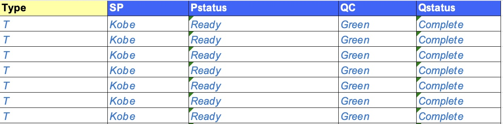
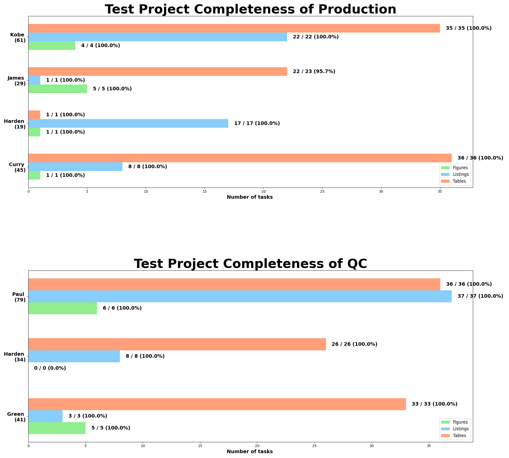

用法解释-completeness_report
completeness_report
功能
从tracker.xlsx里提取P侧和Q侧完成状态，根据完成状态作图并发送邮件。
运行要求
tracker为xlsx/xlsm格式文件，或能被pd.read_excel函数读取的文件；
tracker包含表格类型、P侧程序员名称、P侧完成状态、Q侧程序员名称、Q侧完成状态这5列，每行为一张表、列表或图；
表格类型的只能填写为T、L、F这三个字母，用来表示Table, Listing, Figure。
运行步骤
填写参数
| 参数 | 填写 |
|---|---|
| file_path | 填写输入tracker路径，注意正斜杠/、文件带后缀。 填写示例：file_path = 'C:/document/tracker.xlsx' |
| sheet_name | 指定sheet页； 填写示例：sheet_name = 'sheet' |
| ds_select_list | 指定表格类型、P侧程序员名称、P侧完成状态、Q侧程序员名称、Q侧完成状态这5列； 注意上述顺序不能乱；列名和tracker里一致； 填写示例：ds_select_list=['Type', 'SP', 'Pstatus', 'QC', 'Qstatus'] |
| ds_status_list | 指定P侧和Q侧完成的值，比如'Ready for QC'意味着P侧完成，'QC Complete'意味着QC侧完成； 填写示例：ds_status_list=['Ready for QC', 'QC Complete'] |
| project | 项目名称，输出作图的标题； 填写示例：project = 'Name of the project' |
| side | 只出P侧填写'p'，示例：side='p'； 只出Q侧填写'q'，示例：side='q'； 两侧都出填写'all'，示例：side='all'； |
| email_sender | 发件人的邮箱和密码，目前只支持微软的邮箱账户；注意个人邮箱需要开启SMTP权限； 填写示例：email_sender=['5211314@outlook.com', 'password'] |
| email_recipient | 收件人的邮箱，以python列表的形式填写； 填写示例： 单人：email_recipient=['5211314@qq.com']多人：email_recipient=['5211314@qq.com', '12345@outlook.com'] |
| email_cc | 抄送人邮箱，写法同收件人邮箱。 |
| outpath | 作图输出路径，程序运行之前需要保证该文件夹存在； 填写示例：outpath = 'C:/document' |
运行代码
示例
有tracker.xlsx如下：  填写参数运行程序
from TFLsTool import completeness_report
completeness_report(
file_path='./tracker.xlsx',
sheet_name='sheet',
ds_select_list=['Type', 'SP', 'Pstatus', 'QC', 'Qstatus'],
ds_status_list=['Ready', 'Complete'],
project='Name of the project',
side='all',
email_sender = [
'iamthesender@outlook.com',
'thisispassword'
],
email_recipient = ['12345678@outlook.com', '5211314@outlook.com'],
email_cc = ['12345678@outlook.com', 'james@outlook.com'],
outpath='./output'
)
得到如下结果 